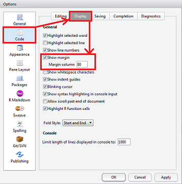
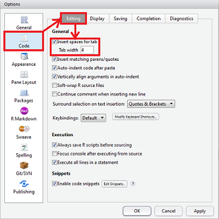

2016-12-14 11:22:35
代码风格（英语：Programming style）即程序开发人员所编写源代码的书写风格。 良好代码风格的特点是使代码易读。 总结程序设计实践中的经验，代码风格的要素包括（但不限于）以下几点：
我只是想用R跑跑分析，又不要做码农，为什么还要遵守开发者代码风格？
c, list, TRUE, FALSE；Rstudio中Tools -> Global Options -> Code -> Display-> General -> Show margin -> Margin column = 80。
Rstudio中Tools -> Global Options -> Code -> Editing -> General -> Insert spaces for tab -> Tab width=4。
tabPrior <- table(df[df$daysFromOpt < 0, "campaignid"]) total <- sum(x[, 1]) total <- sum(x[1, ])
tabPrior <- table(df[df$daysFromOpt<0, "campaignid"]) # 在 '<' 两侧需要增加空格 tabPrior <- table(df[df$daysFromOpt < 0,"campaignid"]) # 逗号后需要一个空格 tabPrior<- table(df[df$daysFromOpt < 0, "campaignid"]) # 在 <- 前需要一个空格 tabPrior<-table(df[df$daysFromOpt < 0, "campaignid"]) # 在 <- 两侧需要增加空格 total <- sum(x[,1]) # 逗号后需要一个空格 total <- sum(x[ ,1]) # 逗号后需要一个空格, 而非逗号之前 -2<-1 # 想想看会发生什么?
if (debug)if(debug)多加空格 (即，在行内使用多于一个空格) 也是可以的，如果这样做能够改善等号或箭头 (<-) 的对齐效果。
plot(x = xCoord,
y = dataMat[, makeColName(metric, ptiles[1], "roiOpt")],
ylim = ylim,
xlab = "dates",
ylab = metric,
main = (paste(metric, " for 3 samples ", sep="")))if (debug) x[1, ]
if(debug)
if ( debug ) # debug 的两边不要加空格 x[1,] # 需要在逗号后加一个空格
但在处理这类单个语句时， 必须前后一致地要么全部使用花括号，或者全部不用花括号。
if (is.null(ylim)) {
ylim <- c(0, 0.06)
}
或 (不可混用)
if (is.null(ylim))
ylim <- c(0, 0.06)if (is.null(ylim)) ylim <- c(0, 0.06)
if (is.null(ylim)) {ylim <- c(0, 0.06)}不要以分号结束一行，也不要利用分号在同一行放多于一个命令。
如果所有人都以相同顺序安排代码内容, 就可以更加轻松快速地阅读并理解他人的脚本了。
source() 和 library() 语句print，plot)编写R加载包的话，请全盘参考William Hadley的指南。
# Create histogram of frequency of campaigns by pct budget spent.
hist(df$pctSpent,
breaks = "scott", # method for choosing number of buckets
main = "Histogram: fraction budget spent by campaignid",
xlab = "Fraction of budget spent",
ylab = "Frequency (count of campaignids)")
predictCTR <- function(query, property, numDays,
showPlot = TRUE)predictCTR <- function(query, property, numDays, showPlot =
TRUE)为便于使用roxygen2包将R脚本编译成加载包，强烈建议在函数定义行上方插入一个注释区. 这些注释应当符合roxygen2的语法，每一行都以#’ 开头:
@title表示（或注释区第一行）;@description（或注释区第三行，第二行留空）和@details表示;@param表示, 对每个参数的描述 (包括数据类型);@return表示;@aliases，@author，@examples，@export，@importFrom这些注释应当描述得足够充分, 这样调用者无须阅读函数中的任何代码即可使用此函数. 而编译后，roxygen2能自动将这些注释生成函数文档(.Rd)。
鼓励用RStudio中书写代码。可使用 Ctrl+Alt+Shift+R 快捷键在函数体上方插入Roxygen2文档骨架。
#' Computes the sample covariance between two vectors.
#'
#' \code{CalculateSampleCovariance} computes the sample covariance between two
#' vectors.
#'
#' @details \code{CalculateSampleCovariance} computes the sample covariance
#' between two vectors.
#'
#' @param x One of two vectors whose sample covariance is to be calculated.
#' @param y The other vector. x and y must have the same length, greater than one,
#' with no missing values.
#' @param verbose If TRUE, prints sample covariance; if not, not. Default is TRUE.
#'
#' @return The sample covariance between x and y.
#' @export
#' @import base
#'
#' @examples
#' calculateSampleCovariance(x, y)
#'
#' @author Given Middle Surname, \email{name@@domain.com}
#' @references \url{http://xxxxxxxxxxx}
#' @seealso \code{\link{var}}
#' @keywords covariance
#'
calculateSampleCovariance <- function(x, y, verbose = TRUE) {
n <- length(x)
# Error handling
if (n <= 1 || n != length(y)) {
stop("Arguments x and y have invalid lengths: ",
length(x), " and ", length(y), ".")
}
if (TRUE %in% is.na(x) || TRUE %in% is.na(y)) {
stop(" Arguments x and y must not have missing values.")
}
covariance <- var(x, y)
if (verbose)
cat("Covariance = ", round(covariance, 4), ".\n", sep = "")
return(covariance)
}
对于不输出到命名空间的隐函数，可将上述注释修改为非roxygen2格式的，即以“#”开头，而非“#’”。
编码时通篇使用一种一致的风格来书写 TODO：
TODO(您的用户名): 所要采取行动的明确描述 或FIXME(您的用户名): 所要采取行动的明确描述Attach()使用 attach() 造成错误的可能数不胜数。避免使用它。
始终完整书写TRUE和FALSE，而不要用T或F简略。
a <- TRUE
a <- F
错误 (error) 应当使用 stop()或stopifnot() 抛出。
Thank you!